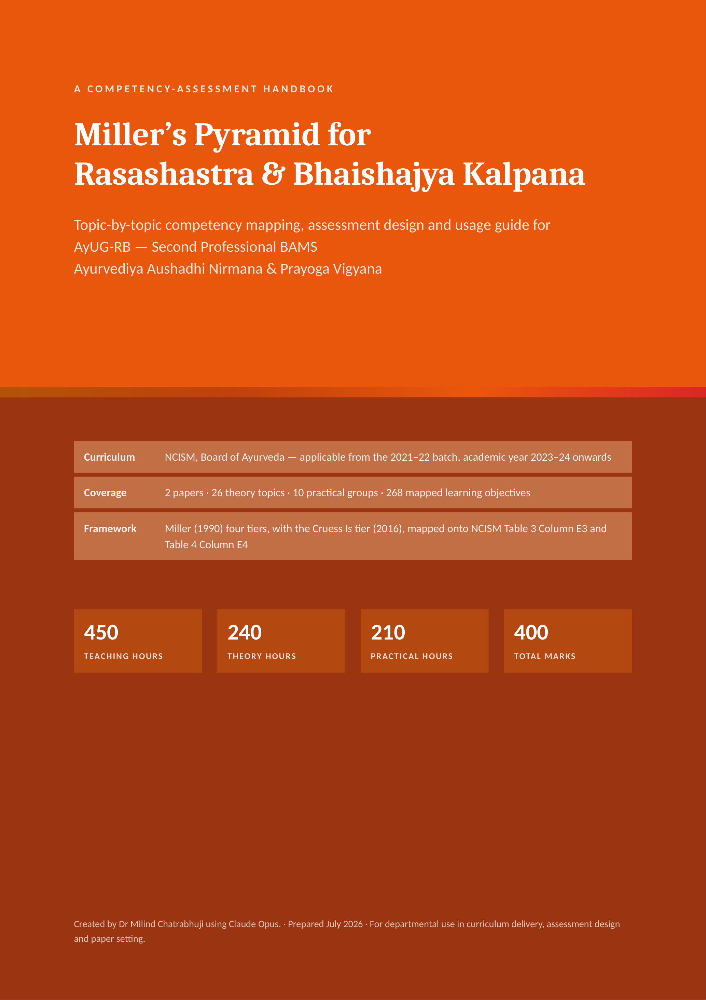
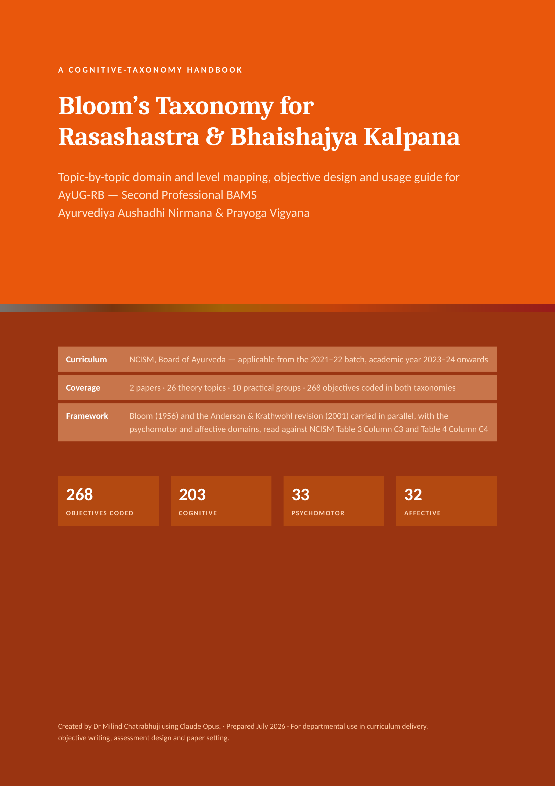
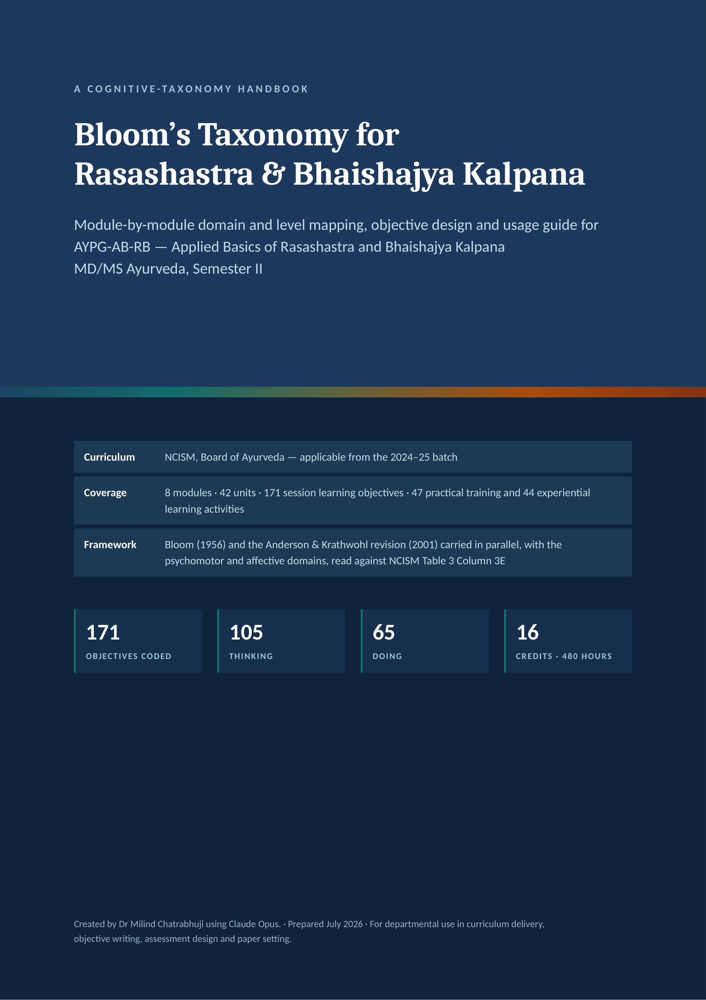

For Teachers
Select a curriculum level below to access the Bloom's Taxonomy and Miller's Pyramid handbooks for Rasashastra & Bhaishajya Kalpana.


Undergraduate (UG) Handbooks
Systematic cognitive taxonomy mapping and competency assessment blueprints for Second Professional BAMS faculty and educators.
36 Curriculum Units Detailed 268 Teaching & Learning Objectives Bloom's (L1–L6) & Miller's Pyramid Handbooks
Explore UG Handbooks


Postgraduate (PG) Handbooks
Advanced pedagogical handbooks for MD/MS Ayurveda faculty, categorized into Second Semester and Semesters 3 to 6.
Second Semester (AYPG-AB-RB · 2 Vols) Semester 3 to 6 (AYPG-RB · 2 Vols) All 4 MD/MS Specialty Papers Covered
Explore PG Categories